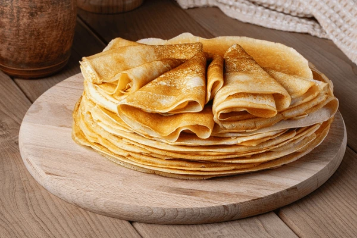

Etape 1 : mettre la farine, le sel, le sucre et les oeufs dans une saladier
Etape 2 : Mixer le tout avec un robot ou un fouet
Etape 3 : Ajouter le lait progressivement jusqu'à obtenir une pate homogene
Dans une poele chaude, verser une petite louche de pate puis retourner au bout de 1 minute
